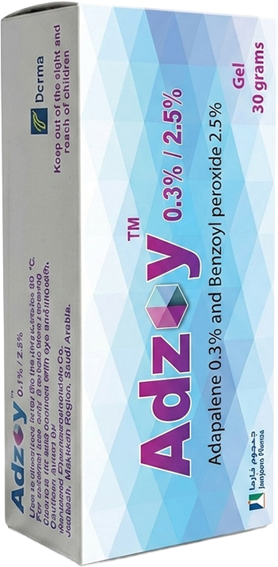

Patient profile 3 Illustrative
Omar, 35
Working professional · Severe inflammatory acne · Concerned about isotretinoin
“My acne is getting worse. I’ve heard about isotretinoin on social media, but I’m concerned about the dryness and eye irritation, especially since I already have dry eyes. I want an effective treatment that my doctor can monitor and that I can continue comfortably.”

- Age
- 35
- Occupation
- Working professional
- Diagnosis
- Severe inflammatory acne
- Relevant history
- Dry skin · history of dry eyes
His story
Two years of breakouts, out of every photo
Omar’s acne has become more noticeable over the past two years. Because of repeated inflammatory breakouts, he has started avoiding photos and social occasions.

His concerns
Worried about the next step
 Inflammatory lesions
Side effects he read about
Dry skin
Dry eyes
Illustrative · AI-generated
Inflammatory lesions
Side effects he read about
Dry skin
Dry eyes
Illustrative · AI-generated
Presentation
What you see in clinic
- Clear
- Almost clear
- Mild
- Moderate
- Severe
Tap the glowing points on Omar’s face.
Your decision
What would you prescribe for Omar?
Recommended for Omar
Consider Adzoy™ 0.3%/2.5% gel once daily plus oral doxycycline, when clinically appropriate

Why?
- Designed for severe inflammatory acne requiring combination treatment
- Combines adapalene 0.3%/BPO 2.5% with oral doxycycline for a comprehensive treatment approach
- Provides an effective treatment option for patients with severe inflammatory acne, including as an option before oral isotretinoin or when oral isotretinoin is unsuitable
- Omar may not be an appropriate candidate for oral isotretinoin at this time due to his tendency toward dry skin and dry eyes, which may be exacerbated by isotretinoin treatment.
For physician-selected patients with severe inflammatory acne in whom oral isotretinoin is unsuitable, Adzoy™ 0.3%/2.5% used with oral doxycycline is an effective and well-tolerated non-isotretinoin treatment option.

Omar’s routine
One gel at night, plus oral doxycycline
Adzoy™ 0.3% gel once daily in the evening, combined with oral doxycycline when clinically appropriate.
Week 0
Starting Adzoy™ 0.3% + doxycycline
Severe inflammatory acne.
Week 4
Inflammation settling
Week 12
Breakouts under control
Week 0 → Week 12
See the difference
Drag across the mirror to compare Omar before and after 12 weeks of Adzoy™ 0.3% with oral doxycycline.
Illustrative, AI-generated images.

Start with adapalene 0.3%/BPO 2.5% + doxycycline before oral isotretinoin: proven efficacy in severe inflammatory acne
A 12-week, Phase 4, multicenter, single-arm, open-label study in 186 patients aged ≥ 12 years with severe inflammatory acne vulgaris who were considered candidates for oral isotretinoin. Patients received once-daily adapalene 0.3%/BPO 2.5% gel plus oral doxycycline 100 mg twice daily, with efficacy and oral isotretinoin candidacy assessed throughout the study.
Outcome: Adapalene 0.3%/BPO 2.5% + doxycycline demonstrated efficacy in severe inflammatory acne and may provide a treatment option before oral isotretinoin or when oral isotretinoin cannot be used.
Study outcomes (%)
Phase 4, 12-week, single-arm, open-label, multicenter study
Phase 4, 12-week, single-arm, open-label, multicenter study (N=186) in males and females aged ≥ 12 years with severe (nonnodulocystic, nonconglobate) inflammatory acne vulgaris (IGA 4, ≤ 4 nodulocystic lesions), considered oral isotretinoin candidates at baseline. All subjects received once-daily adapalene 0.3%/BPO 2.5% gel plus oral doxycycline 100 mg twice daily for 12 weeks. Isotretinoin candidacy was reassessed at each visit. Efficacy endpoints: inflammatory lesion reduction (week 12), IGA success (weeks 4, 8, 12), percent lesion reduction (weeks 4, 8, 12), and subject questionnaires (week 12).
Study at a glance

Omar’s voice after acne healing
“With Adzoy Gel, I was able to better control my breakouts, which gave me more confidence about managing my acne and preventing it from getting worse.”